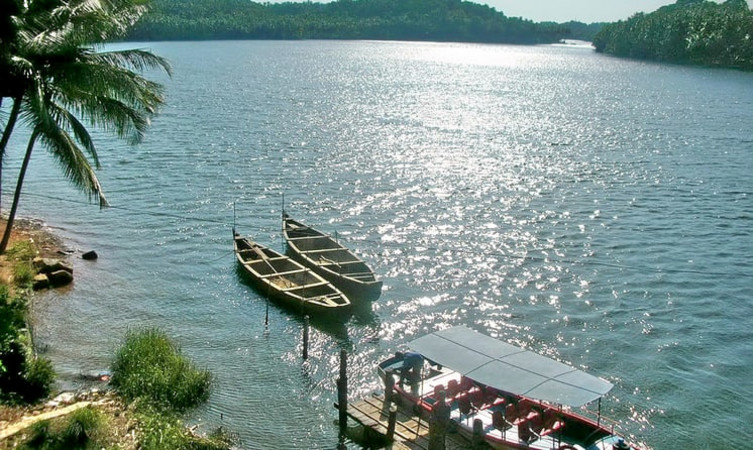

kottakunnu
beautiful up-hill park with beautiful environment
Teak museum
Teak Museum at Nilambur is in Malappuram district. It is considered to be the first of its kind in the world and the only one in India

Kodikuthi mala
Kodikuthimala also known as the Ooty of Malappuram is a hill station in the Malappuram district of Kerala in India. Located in Vettathur and Thazhekode villages,

Keralamkund waterfalls
A basin at the base of waterfalls where people can enjoy a dip in the pond is something everyone wants to have an experience. Keralam Kundu Waterfalls are undoubtedly the best of all Malappuram Tourist Places, and that is why people keep flocking here to have an experience of the mystical.

barathapuza
Bharathappuzha ("River of Bhārata"), also known as the Nila or Ponnani River,[3] is a river in India in the state of Kerala. With a length of 209 km,[2] it is the second longest river in Kerala after the Periyar.